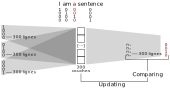

Natural language processing (NLP)
Overall functioning of the Word2Vec package
Let's considerate a corpus. In it, there are sentences like so:
In NLP, we would like to be able to guess words context. Why? Because like so, we would be able to bring closer together words with the same meaning, while words with different ones while be discarded. In order to represent this kind of context, we can use vectors:
-
With same context, the
dot productof two vector while give a small value (in case of measuring a distance). -
With same context, the
dot productof two vector while give a high value (in case of measuring a distance).
To make this vectors, we can use neural network with Word2Vec. Done by Mikolov et al. in 2013 (arXiv), this allow to give in input a corpus on which the neural network will trained, to then output our vectors, known as embeddings. First, to define a context, we can see that this is the words, in in limited windows, around a central word. Like so:
The red word is the central word. Its context is defined by
is surrounding, the black word.
So here, we base ourself on the surrounding of “a” to guess its context and meaning. So next, for our corpus, we are going to give it to the neural network, which is a CBOW architecture:

Here, each context word are used to output a new vector: the
central word. For this, we update our weight to match the hot
encoding embedding. With a loss function (average negative log
likelihood), we minimize it to increase the prediction accuracy.
In other words, we combine all context vector to output the
central vector words with weight on those first ones.
Application on pyHCA
pyHCA is a software that cut a sequence in foldable
part. These cutting are based on the density in hydrophobic
cluster. With those hydrophobic cluster, we can obtain Peitsch
code. Based on this, we can make a corpus composed of Peitsch
code. The dataset used will be the SCOPe one. We only keep the
globular soluble domain. Like so, we can considerate two types
of sentences:
- One sentence = one domain.
- One sentence = foldable domaine.
Top line: Domain with, in bold, the foldable
segment. Middle line: The hydrophobic cluster.
Bottom line: Code Peitsch.
The TOP representation indicates how, based on domain or foldable segment, we can obtain to set of sentences. Then, we give this corpus to Word2Vec to obtain our embedding. With these embedding, we can perform 2D projections or cosine distance on matrix.
Projection
2D projection methods principle
PCA
The Principal Component Analysis is a method to reduce dimensionality of large dataset. In order to do so, we search components (vector-like) that maximizes the variance. If we imagine a ellipsoid (3D ellipse), this will mean seeking for the line going through the larger ellipsoid's axe.
MDS
The Multidimensional scaling create an embedding space where
the data dimension are reduced to 2. The MDS try to keep distance
between two point. To do so, the MDS methods try to minimize:
\[ J = \displaystyle\sum_{i,~j} \left( D_{ij} - d_{ij} \right)^2 \]
With D the original distance between two points in the original
space projections and d the new distance between
the two points in the new space projections. The embedding try
to to this. MDS is an iterative method.
t-SNE
For th t-SNE principle, there is some common points with MDS. Because, in a global view, they both try to minimize a criteria and output an embedding.
The t-distributed Stochastic Neighbour Embedding start with a PCA before trying to find, iteratively the minimum of its criteria. Here, t-SNE try to keep the distance between neighbors. This allow to emphasize the data clustering. The criteria that is minimize is: \[ KL (P || Q) = \displaystyle\sum_{i \neq j} p_{ij} \times log \left( \dfrac{p_{ij}}{q_{ij}} \right) \] Which is a metric to evaluate a distance to see how distribution (probability) are different between P and Q. Those two are from the computation of distribution of hight and low dimensional objects. In other words, we try to give probabilities such as close objects have high probability value and vice verse.
UMAP
Uniform Manifold Approximation and Projection is a method very similar to t-SNE. Its changed the way of gathering points together based on graph methods.
Sammon mapping
Sammon mapping is like MDS, but its try to preserve data structures,
so the inter-point distance, much than MDS. The different between
those methods are mainly due to the minimize function call Sammon's
stress or error :
\[ E = \dfrac{1}{\displaystyle\sum_{i < j} D_{ij}} \times \left( \displaystyle\sum_{i < j} \dfrac{\left( D_{ij} - d_{ij} \right)^2}{D_{ij}} \right)\]
With D the original distance between two points in
the original space projections and d the new distance
between the two points in the new space projections.
Projection interpretation
Matrix
⚠️ HEAVY LOADING PAGE, DUE TO THE LOADING HEATMAP
Cosine similarity
With the obtain embedding, it is possible to compute a cosine similarity like so : \[ cos(\theta) = \dfrac{\vec{A} \times \vec{B}}{\lVert \vec{A} \rVert \times \lVert \vec{B} \rVert} \] To explain simply, the top fraction compute the aforementioned similarity with a dot product. The more the value are similar, the more the angle will be null, the more it will tend to 1. The denominator is here to get rid of the vector size. After, to get the distance, we have to do: \[ distance = 1 - |cos(\theta)| \] So with this, when two Peitsch code will have a same context, the distance will tend to 0.
Matrix interpretation
To interprate the matrix, we have to understand what they are. It's about a distance obtain with a cosine similarity. This last one was also obtain with the words embeddings, describe in the first part. What the embeddings give is a context. When two words have the same one, their similarities are high, which mean that their distance is low. So two same words have a similraity of 1 and a distance of 0. This mean that, when two words have the same extact context, they are likely the same, in other words synonyms. Here, because we have hydrophobics clusters, that means that those are interchangeable or substituable. So more a distance is high, more two hydrophobics clusters are different and not substituable and vice verse.
Distribution
Testing two distributions in HCDB vs SCOPe
Testing data normality
The distribution are shown in [this part].
In both case, the obtained p-value is strictly inferior to 0.001 (so highly significant ***). This means that the null hypothesis H0 is rejected, meaning that the data do not follow a normal distribution. This means that the test to effectuate next to test the distribution is a non-parametric one.
Testing the distribution
The Kolmogorov–Smirnov test check if two distributions are the same. In this case, the obtained p-value is strictly inferior to 0.001 (so highly significant ***). This means that the null hypothesis H0 is rejected, meaning that the data do not follow the same distribution. Those results can be explained in two different ways:
- Data from rarest sample (in other words, from high Peitsch code) are very different and instable. This influence a lot the data.
- The count of small Peitsch codes is more invariant. Also, we have more data in a case than the other, influencing also the distribution.